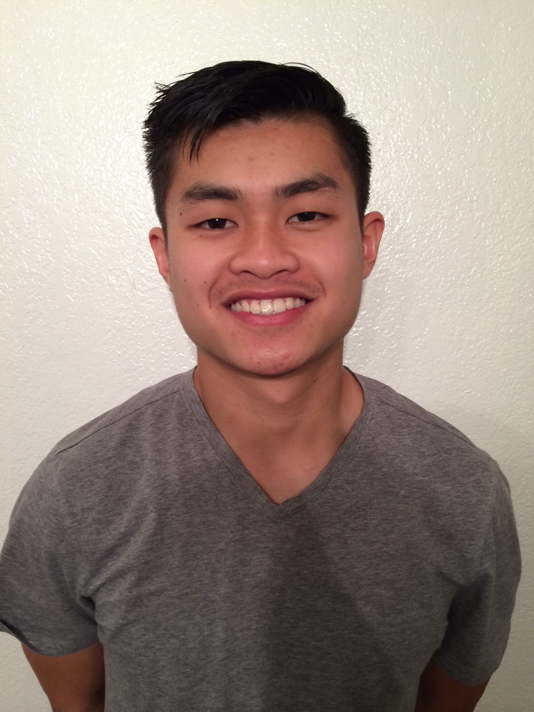

Hey there! I'm currently an IT Program Manager in the Bay Area. I graduated from UC San Diego with a BS in Mathematics and a minor in Philosophy with a concentration in logic. When I'm not working, I love spending time outdoors, whether that's at the beach, on a trail, or in the gym running or lifting weights. San Diego is one of my favorite places to escape to when I need to recharge; it has the perfect balance of great weather and incredible outdoors.
As a minority in the tech field, I'm committed to the work of diversity and inclusion, raising awareness, building community, and surrounding myself with people who share that mission. I believe in challenging myself constantly and staying comfortable being uncomfortable. I bring a strong work ethic to every team I join and show up with a simple belief: one team, one fight. Before jumping into industry, I spent two years completing a master's degree in pure mathematics, which taught me how to think rigorously about any problem I come across.
Work
The Hybrid Work Operations Center (HWOC) functions as both a customer showcase and an internal operations center. For customers, we demonstrate how [Company A] uses its own technology in a real working environment, and explore how that same technology could be applied in their own. Internally, the space seats four engineers who proactively monitor [Company A]'s workforce to ensure employees have a great work experience and can perform their best work.
Photos are preview-only. See instructions to make them permanent on GitHub.
The HelpZone Kiosk (HZK) serves as both an IT support solution and an employee self-service purchasing station for common IT accessories. Employees can reach a support advisor virtually with one touch of a button via [Company A]'s calling solution and technology. The kiosk also stocks common IT accessories such as mice, chargers, and cables, available to any employee who is away from their home office and needs something quickly, all with a swipe of their employee badge.
Photos are preview-only. See instructions to make them permanent on GitHub.
Academic background
I didn't fully appreciate mathematics until I took AP Calculus in high school. There was something satisfying about how it pulled together everything I'd learned before, algebra, trigonometry, into one unified framework. That experience is what made me want to study math seriously.
College math is a different animal entirely. You stop solving with formulas and start solving with logic and writing. That shift toward rigor and abstraction changed how I think, and it's a skill that has stayed with me long after the coursework ended.
My real passion emerged when I stumbled into a Topology course and encountered Knot Theory, a field of mathematics dedicated to studying the kinds of knots you see in everyday life, and developing tools to mathematically distinguish one from another. I'd encourage anyone curious to look it up.
I went on to write my graduate thesis on Khovanov Homology, a method within Knot Theory. More than the subject itself, graduate research taught me how to sit with an open-ended problem that has no known answer, resist jumping to solutions before the question is fully understood, and verify rigorously that what I found was actually correct. That precision and patience follows me into every decision I make.